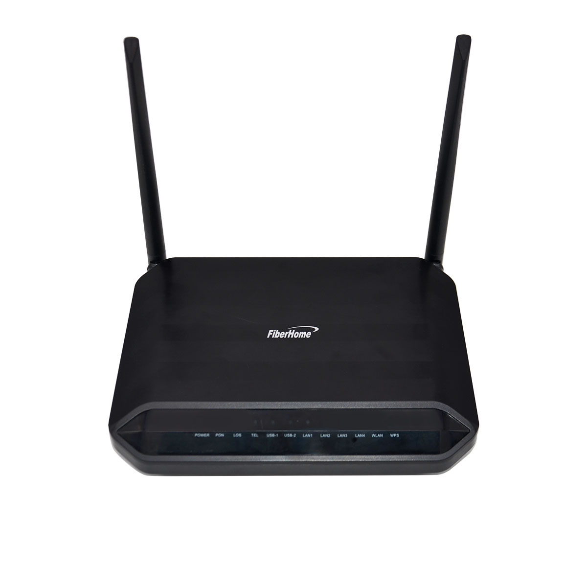
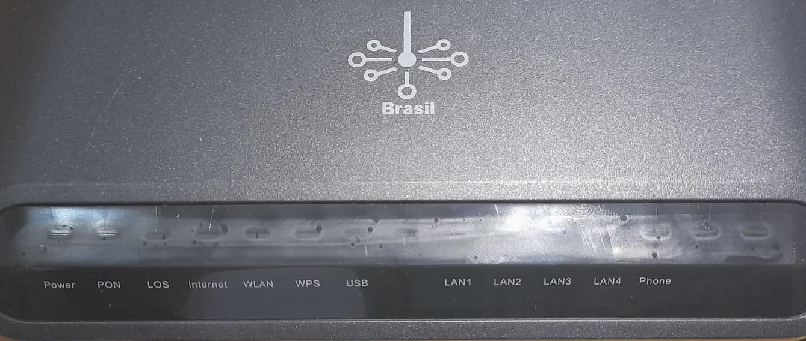
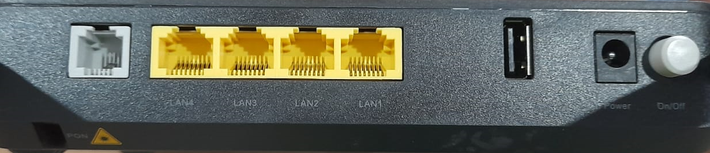
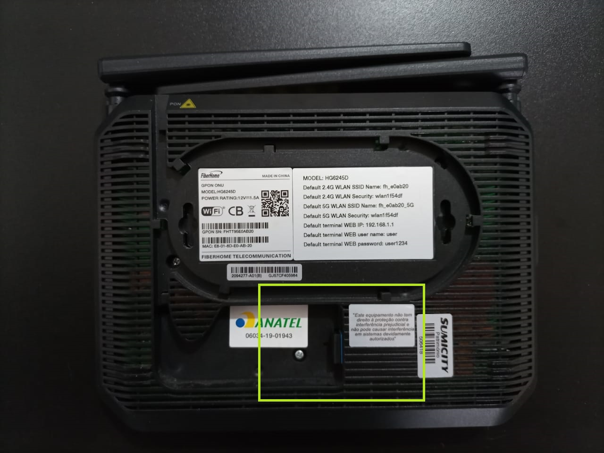
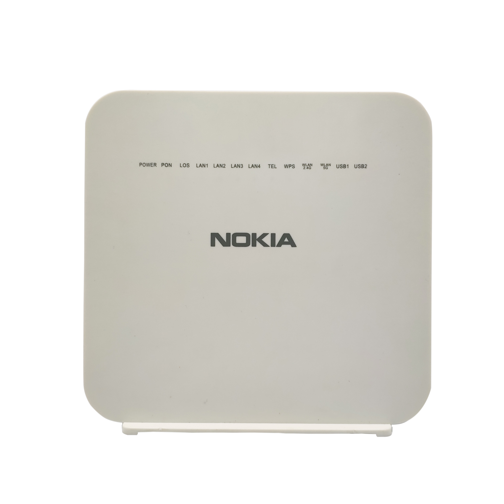
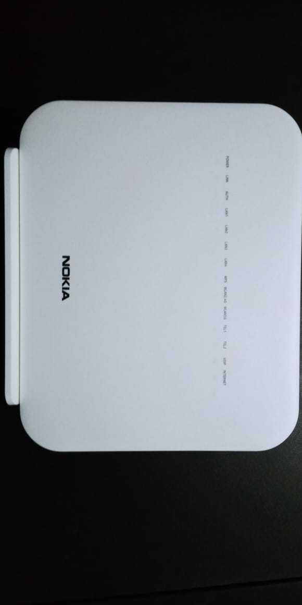
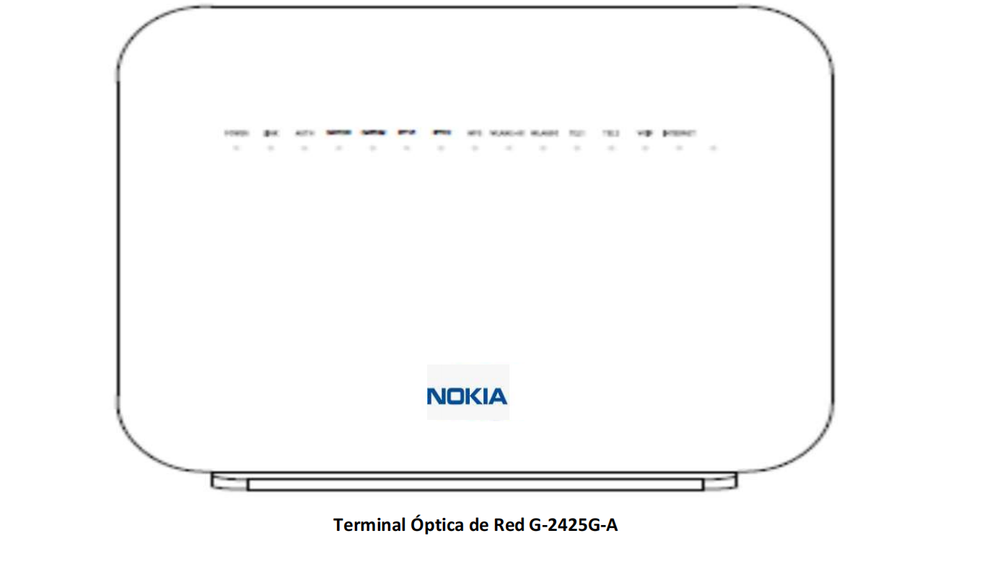
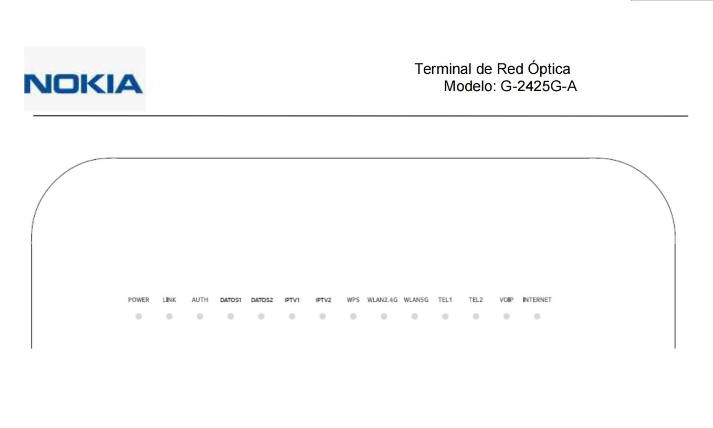
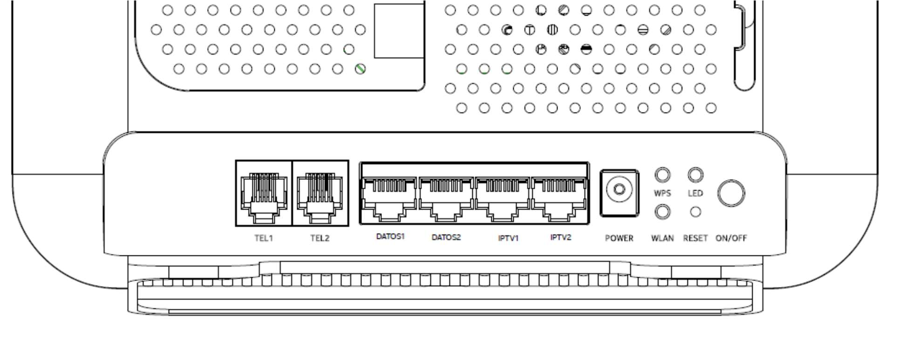

Sobre meu Fiberhome:
- Tipo do modem: Fibra ótica
- Tecnologias de conexão: GPON
- Com dual band: Sim
- Quantidade de portas USB: Duas
- Modem / Router: Sim
- Normas IEEE: 802.11a,802.11ac,802.11b,802.11g,802.11n
- Frenquências: 2.4 GHz,5 GHz
- Com Wi-Fi: Sim
- Quantidade de antenas: 2
Sobre o produto:
A ONU HG6143D é o novo lançamento da FiberHome, com design discreto e moderno. Possui 4 portas Gigabit Ethernet, 1 porta POTS, Wi-Fi Dual Band AC MIMO 1200 Mbps.
Os LEDs indicadores do HG6143D estão localizados no painel frontal do equipamento. Veja o que cada led representa.
Indicadores
Alimentação / PON / LOS / Internet / WLAN / WPS
/ USB / LAN / Telefone
- "Power" O dispositivo está ligado.
- "PON" LED indicador de status do registro.
- "LOS" Sinal óptico LED indicador de status.
- "INTERNET" Banda larga LED indicador de status.
- "WLAN1,WLAN2" 2.4G/5G LED indicador de status do sinal sem fio.
- "WPS" Status WPS LED indicador.
- "USB" LED indicador USB.
- "LAN1 to LAN4" Ethernet LED indicador de status da interface.
- "Phone" Porta telefônica LED indicador de status.


Fiberhome

Sobre meu Nokia:



Indicadores G-2425G-A
- O led “POWER” que indica se a unidade está ligada.
- o led “LINK” que indica se há conexão com a OLT.
- O led “AUTH” que indica se o ONT passou corretamente na faixa e está autorizado na
- Ethernet
- 4 leds “DATOS1, DATOS2, IPTV1, IPTV2” eles acenderão se houver um dispositivo conectado a eles no nível de porta FXS correspondente.
- Led “WPS” que acende quando a segurança WPS é ativada na interface WiFi
- Led “WLAN 2.4G” que acende se a interface WiFi 2.4G estiver ativada.
- Led “WLAN 5G” que acende se a interface 5G WiFi estiver ativada.
- 2 leds “TEL1 e TEL2” que acendem ao atender ou tocar um telefone analógico.
- Led “VOIP” que acende quando o ONT é registrado no proxy correspondente.
- Led “INTERNET” que acendem se a conexão WAN da Internet estiver ativa.

A imagem a seguir mostra o layout da porta na
parte traseira de cada ONT.
Fisicamente tem as seguintes
portas:
- Quatro portas Ethernet 10/100/1000 Base-T para acesso à Internet de alta velocidade, bem como Serviços de IPTV/VoD. As duas primeiras portas reservadas para serviço de dados (DATA1, DATA2) e portas 3 e 4 para IPTV (IPTV1 e IPTV2)
- Duas portas POTS (VoIP) para serviços de voz (TEL1 – TEL2)
- Integrado Wireless 802.11b/g/n (2.4Ghz) e 802.11ac (5Ghz) no ONT G-2425G-A.
Nokia